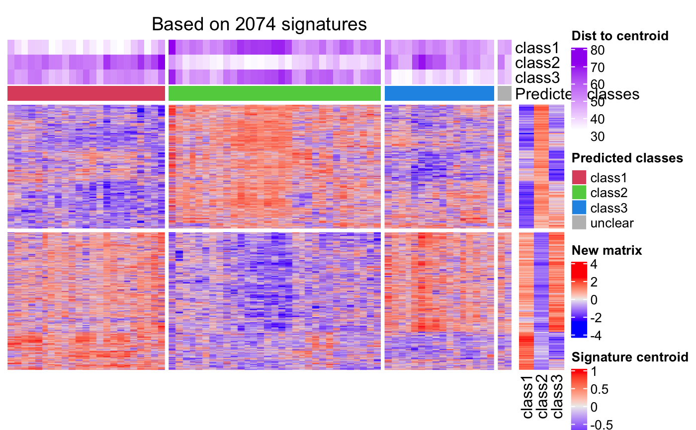

predict_classes-matrix-method.RdPredict classes for new samples based on signature centroid matrix
# S4 method for matrix predict_classes(object, mat, dist_method = c("euclidean", "correlation", "cosine"), nperm = 1000, p_cutoff = 0.05, plot = TRUE, verbose = TRUE, prefix = "")
| object | The signature centroid matrix. See the Details section. |
|---|---|
| mat | The new matrix where the classes are going to be predicted. The number of rows should be the same as the signature centroid matrix (also make sure the row orders are the same). Be careful that |
| dist_method | Distance method. Value should be "euclidean", "correlation" or "cosine". |
| nperm | Number of permutatinos. It is used when |
| p_cutoff | Cutoff for the p-values for determining class assignment. |
| plot | Whether to draw the plot that visualizes the process of prediction. |
| verbose | Whether to print messages. |
| prefix | Used internally. |
The signature centroid matrix is a k-column matrix where each column is the centroid of samples in the corresponding class (k-group classification).
For each sample in the new matrix, the task is basically to test which signature centroid the current sample is the closest to. There are two methods: the Euclidean distance and the correlation (Spearman) distance.
For the Euclidean/cosine distance method, for the vector denoted as x which corresponds to sample i
in the new matrix, to test which class should be assigned to sample i, the distance between
sample i and all k signature centroids are calculated and denoted as d_1, d_2, ..., d_k. The class with the smallest distance is assigned to sample i.
The distances for k centroids are sorted increasingly, and we design a statistic named "difference ratio", denoted as r
and calculated as: (|d_(1) - d_(2)|)/mean(d), which is the difference between the smallest distance and the second
smallest distance, normalized by the mean distance.
To test the statistical significance of r, we randomly permute rows of the signature centroid matrix and calculate r_rand.
The random permutation is performed n_perm times and the p-value is calculated as the proportion of r_rand being
larger than r.
For the correlation method, the distance is calculated as the Spearman correlation between sample i and signature
centroid k. The label for the class with the maximal correlation value is assigned to sample i. The
p-value is simply calculated by cor.test between sample i and centroid k.
If a sample is tested with a p-value higher than p_cutoff, the corresponding class label is set to NA.
A data frame with two columns: the class labels (the column names of the signature centroid matrix are treated as class labels) and the corresponding p-values.
# \donttest{ data(golub_cola) res = golub_cola["ATC:skmeans"] mat = get_matrix(res) # note scaling should be applied here because the matrix was scaled in the cola analysis mat2 = t(scale(t(mat))) tb = get_signatures(res, k = 3, plot = FALSE)#> * 70/72 samples (in 3 classes) remain after filtering by silhouette (>= 0.5). #> * cache hash: d7b0ab9e8457e94218da8307be387574 (seed 888). #> * calculating row difference between subgroups by Ftest. #> * split rows into 2 groups by k-means clustering. #> * 2076 signatures (50.4%) under fdr < 0.05, group_diff > 0.sig_mat = tb[, grepl("scaled_mean", colnames(tb))] sig_mat = as.matrix(sig_mat) colnames(sig_mat) = paste0("class", seq_len(ncol(sig_mat))) # this is how the signature centroid matrix looks like: head(sig_mat)#> class1 class2 class3 #> [1,] -0.5519215 0.52395127 0.3740407 #> [2,] -0.4025209 0.06789322 0.7546084 #> [3,] -0.3077090 0.58853214 -0.2459700 #> [4,] -0.1548451 0.47963596 -0.4051056 #> [5,] -0.2048139 -0.15871813 0.6803041 #> [6,] -0.3427458 0.40763038 0.1061578mat2 = mat2[tb$which_row, , drop = FALSE] # now we predict the class for `mat2` based on `sig_mat` predict_classes(sig_mat, mat2)#> Predict classes based on 3-group classification (euclidean method) on a 72-column matrix.#> #> #> #> #>#> class p #> sample_39 class3 0.000 #> sample_40 class3 0.000 #> sample_42 class1 0.000 #> sample_47 class1 0.000 #> sample_48 class1 0.000 #> sample_49 class3 0.000 #> sample_41 class1 0.000 #> sample_43 class1 0.000 #> sample_44 class1 0.000 #> sample_45 class1 0.000 #> sample_46 class1 0.000 #> sample_70 class1 0.000 #> sample_71 class1 0.000 #> sample_72 class1 0.000 #> sample_68 class1 0.000 #> sample_69 class1 0.000 #> sample_67 class1 0.000 #> sample_55 class3 0.000 #> sample_56 class3 0.000 #> sample_59 class1 0.000 #> sample_52 class2 0.000 #> sample_53 class2 0.000 #> sample_51 class2 0.000 #> sample_50 class2 0.000 #> sample_54 class1 0.000 #> sample_57 class2 0.000 #> sample_58 class2 0.000 #> sample_60 class2 0.230 #> sample_61 class2 0.000 #> sample_65 class2 0.000 #> sample_66 class1 0.000 #> sample_63 class2 0.000 #> sample_64 class2 0.000 #> sample_62 class2 0.000 #> sample_1 class3 0.000 #> sample_2 class1 0.000 #> sample_3 class3 0.000 #> sample_4 class3 0.000 #> sample_5 class1 0.000 #> sample_6 class3 0.000 #> sample_7 class3 0.000 #> sample_8 class3 0.000 #> sample_9 class1 0.000 #> sample_10 class3 0.000 #> sample_11 class1 0.000 #> sample_12 class2 0.000 #> sample_13 class1 0.000 #> sample_14 class1 0.000 #> sample_15 class1 0.000 #> sample_16 class1 0.000 #> sample_17 class1 0.000 #> sample_18 class3 0.000 #> sample_19 class1 0.000 #> sample_20 class1 0.000 #> sample_21 class1 0.000 #> sample_22 class2 0.016 #> sample_23 class3 0.000 #> sample_24 class1 0.000 #> sample_25 class2 0.998 #> sample_26 class1 0.000 #> sample_27 class3 0.000 #> sample_34 class2 0.000 #> sample_35 class2 0.000 #> sample_36 class2 0.000 #> sample_37 class2 0.000 #> sample_38 class2 0.000 #> sample_28 class2 0.000 #> sample_29 class1 0.000 #> sample_30 class2 0.000 #> sample_31 class2 0.000 #> sample_32 class2 0.000 #> sample_33 class2 0.000# }